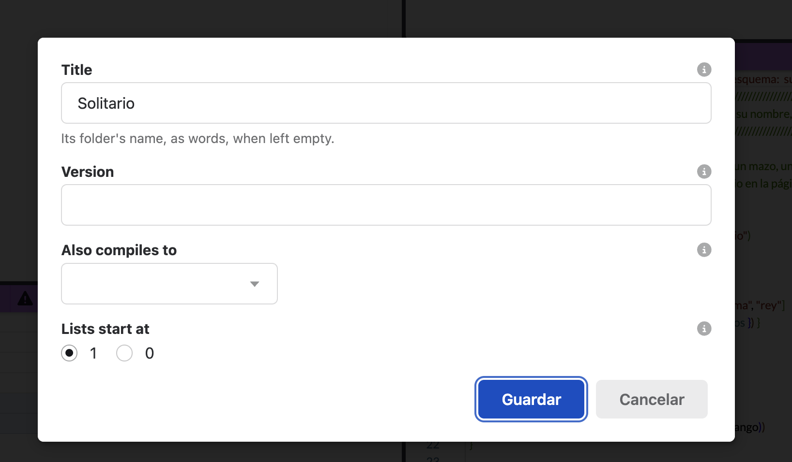

Owen's test run, 2026-10-23 01:18: V2 failed.
Owen: no "written in" choice

You said: "no 'written in' choice". Right: the test was stale. P19 took that choice out on purpose, when you picked "the file's name IS its language".
Carta.es.spell
is Spanish,
Card.spell
English. A project has no language setting, and may mix both.